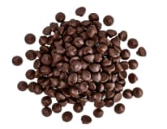

Treat yourself or a loved one to our finest ingredients for a moment of pure delight!
How it's made scroll down-
Unsurpassed taste
Crafted with the finest quality cocoa beans and a dedication to perfection, each bite is a decadent experience that simply cannot be matched. Savor the richness and complexity of our Unsurpassed Taste and discover a new level of chocolate bliss.
-
Affordable price
Indulge in high-quality chocolate without breaking the bank with Simply Chocolate's selection of affordable treats. Enjoy mouth-watering truffles and velvety chocolate bars without sacrificing taste or quality. Browse our selection and indulge in affordable luxury today.
-
Own production
We take pride in our own production process, ensuring that every step is carefully crafted to perfection. From selecting the finest ingredients to handcrafting each piece, our attention to detail is evident in every bite.
IT ALL ADDS UP TO ONE EXCEPTIONAL TASTE SENSATION
At Simply Chocolate, we believe that the secret to exceptional chocolate is in the details. From the sourcing of the finest ingredients to the careful crafting of each individual piece, every step of our process adds up to one exceptional taste sensation.
-

MILK CHOCOLATE
-

MILK
-

NUTS
-

SEMI-SWEET CHOCOLATE
HOW IT'S MADE?

Try our chocolates today and discover the perfect balance of flavor
-
Heat the milk in a saucepan without bringing it to a boil. Add sugar and cocoa powder.
-
At the same time, prepare a water bath. Melt the butter on it.
-
"Mix" the milk mixture and already liquid butter. Mix thoroughly with a silicone spatula so that the mass becomes uniform and silky.
-
Heat the mixture over low heat, letting it barely boil.
-
Pour the chocolate into special containers (can be replaced with ice molds). Allow to cool and harden.
-

Victoria Dobrzhanska
I love this chocolate bar. Perfect combination of light crispy wafer, covered in a thin layer chocolate.
-

Nazar Babenko
This chocolate confection is a delight! A delight! The wafer is light and crisp, the hazelnut cream is smooth, and the chocolate is good.
-

Olena Kampusch
Chocolate is a family favourite treat. Love the delicious smooth chocolate and the creaminess inside. The wafer is soft but crunchy.